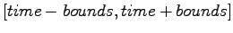

mod.data_sim object. By default in any
simulation only the species concentrations are calculated,
however, the reaction rates can easily be generated as well by
setting:
mod.data_sim_add_rates = True before a
simulation is executed.
Once a simulation is executed the results are stored in the
mod.data_sim object which has the following attributes and
methods:
data_sim.getTime() return a vector of time
points
data_sim.getSpecies() return an array([[time], [species]])
data_sim.getRates() return an array([[time], [rates]])
data_sim.getOutput(*args) return an array consisting of time
plus any specified species or rate e.g. getOutput('s1', 'R1')
data_sim.getDataAtTime(time) return the results
of the simulation at time point time.
data_sim.getDataInTimeInterval(time, bound)
return the simulation data in the interval
, if bounds is not specified it is assumed to be
the step size.
data_sim.l_species the species array labels
data_sim.l_rates the rate array labels